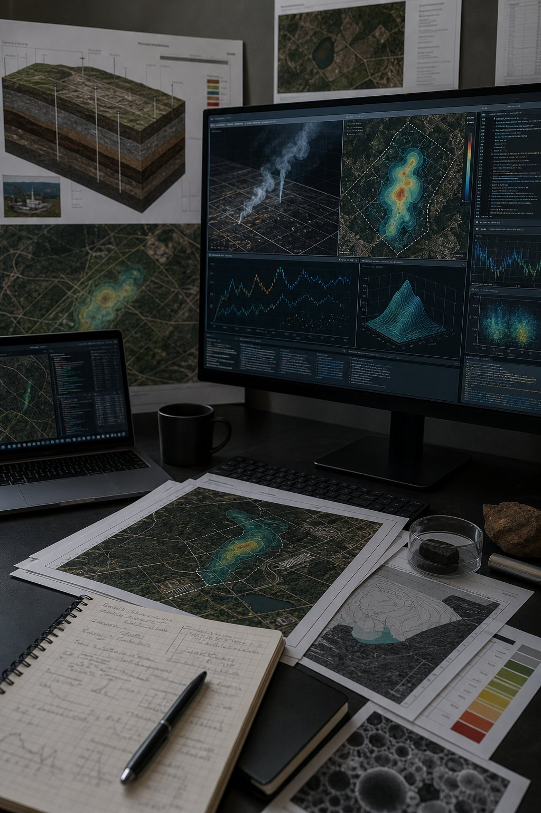

04
Meshach Ando
Research
Methane emissions, PFAS screening, field data, models, and uncertainty checks.

Methane emissions, SEM inverse modeling, satellite observations, PFAS, and landfill cover performance.
Research Areas
Current research areas.
01
Comparison of Landfill Methane FOD Models
313 landfills | 43 states | 713 landfill-years
Compares model-predicted methane generation with measurement-derived emissions to evaluate model behavior, uncertainty, and practical interpretation.
Python | ArcGIS Pro | Statistical Analysis
FOD model comparison against field measurements
02
SEM-to-Emission-Rate Inverse Modeling
Surface monitoring | Genetic algorithms | Emission rates
Uses optimization to infer emission rates from surface emission monitoring observations and atmospheric transport assumptions.
Python | Genetic Algorithms | Inverse Modeling
Genetic-algorithm inverse modeling workflow
03
PFAS Atmospheric Dispersion + Exposure Screening
Source-receptor logic | Monte Carlo | Screening assessment
Frames PFAS air pathway questions through dispersion modeling, spatial exposure screening, and transparent uncertainty assumptions.
Gaussian Dispersion | GIS | Monte Carlo
PFAS concentration screening by receptor distance
04
Landfill Drainage, Moisture, and Methane Oxidation
Water balance | Cover systems | Oxidation performance
Connects drainage, moisture distribution, and landfill cover behavior to methane oxidation and environmental performance.
Water balance | Landfill systems | Environmental modeling
Drainage, cover moisture, and methane oxidation
Research Stack
Software and methods used for research.
01 Compare
Models
FOD model comparison, methane inventories, field measurements, and diagnostics.
02 Infer
Emissions
SEM observations, genetic algorithms, inverse modeling, and source estimation.
03 Screen
Pathways
PFAS dispersion, receptor distances, Monte Carlo checks, and uncertainty framing.
04 Publish
Artifacts
Python code, GIS figures, residual plots, manuscript visuals, and reproducible notes.
Methods
Computational methods used in the research.
First-order decay model comparison and diagnostic visualization.
Inverse modeling using genetic algorithms and SEM observations.
Gaussian dispersion and Monte Carlo screening for atmospheric exposure questions.
GIS workflows for spatial joins, receptor context, and publication figures.
Figures
Publication-style plates for maps, model comparisons, residuals, and method diagrams.
Datasets / Code
Research code and datasets.
Code repository: GitHub
Research datasets include landfill methane model comparisons, SEM inverse-modeling workflows, PFAS dispersion screening inputs, and landfill drainage/moisture analyses.
Documentation focus: methods, assumptions, model uncertainty, reproducibility notes, and publication-ready figures.
Presentations
Conference and research presentations.
AEESP 2025 poster: Environmental Systems Modeling and Landfill Emissions Research.
GWMS 2026 poster: Modeled and Measured Landfill Methane Emissions.
Methods presentations spanning SEM inverse modeling, PFAS dispersion screening, and landfill cover performance.